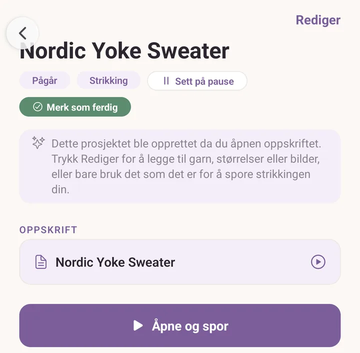
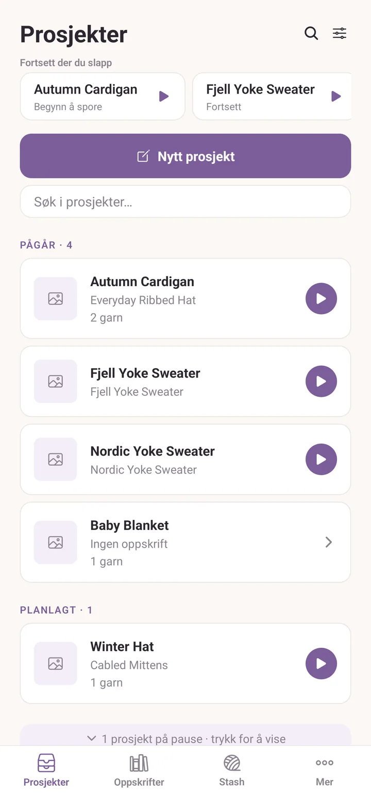
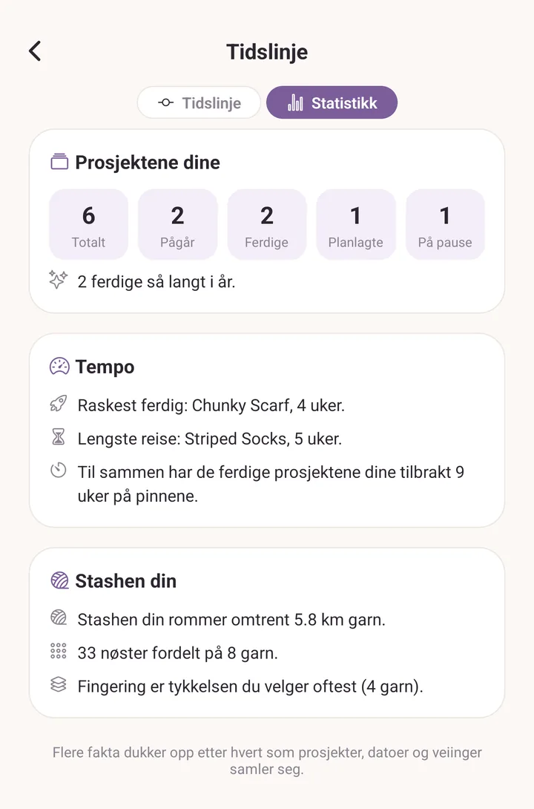

Prosjekter
Et prosjekt er "jeg lager denne tingen". Det trekker en oppskrift, garnet ditt og fremdriften din sammen på ett sted, pluss bilder underveis og strikkefastheten du faktisk fikk (som kan avvike fra den oppskriften venter seg).
Starte et prosjekt
To veier inn:
- Fra Oppskrifter-fanen. Trykk på en oppskrift, og så Åpne. Purl lager et prosjekt for den oppskriften på flekken, oppkalt etter den og allerede satt til Pågår, så du kan begynne å lese uten å fylle ut et skjema først. Ingenting ved det er låst; det er et vanlig prosjekt som tilfeldigvis er nesten tomt.
- Fra Prosjekter-fanen. Trykk Nytt prosjekt for hele redigeringen: navn, status, håndverk, oppskrift, garn, datoer, bilde, notater, størrelse og pinner.
Den første veien er uten friksjon. Hvis du aldri kommer så langt som til å fylle ut resten, holder det prosjektet likevel på fremdriften din, tellerne dine, markeringene dine og notatene dine på oppskriften.
Åpne den samme oppskriften igjen i morgen, så tar Purl deg tilbake til prosjektet du allerede har. Den stabler ikke opp dubletter.
Prosjekter Purl har laget for deg
Et prosjekt laget på den måten åpner med en kort melding som forteller deg at det ble laget da du åpnet oppskriften, og inviterer deg til å trykke Rediger for å legge til garn, størrelser eller bilder. Meldingen forsvinner når prosjektet har noe i seg. Det er ingen merkelapp og ingenting som skal forfremmes: fyll ut så mye eller så lite du vil.

Velge garn
Trykk Rediger, og trykk Legg til garn fra stashen under Garn. Velgeren Velg garn åpner seg. Flere garn er helt greit: dobbel tråd, en kontrastfarge, alt sammen. Hvert av dem blir en rad på prosjektet, med et Trenger-felt for nøstene du regner med å bruke og, senere, det du faktisk brukte.
Prosjektsiden
Åpner du et prosjekt, ser du alt med ett blikk:
- Forsidebildet øverst, med Rediger ved siden av.
- Knapper for hvor prosjektet står: Sett på pause, som leser Fortsett når det står på pause, Merk som ferdig, og når det er ferdig, Gjenåpne.
- Oppskrift, med Åpne og spor for å begynne å lese.
- Garn, én rad per garn, hver med hva som er igjen i stashen og hva dette prosjektet har brukt, pluss en speedometerknapp for veiing. Skriver du inn et tall i garnets Trenger-felt, viser raden det også.
- Detaljer: størrelsen du lager, pinnene eller heklenålen din, og strikkefastheten din med et kalkulatorikon ved siden av.
- Start- og sluttdato.
- Galleri med bilder.
- Notater. Lenker i notatene dine kan trykkes på.
Veie inn garn
Speedometerknappen på hver garnrad åpner et lite ark for gram (eller meter) brukt. Lagre, så trekkes det tilsvarende garnet i stashen ned automatisk (med den omregningen som er mest nøyaktig). Juster det senere, så regner stashen om fra den siste veiingen.
Dette er også slik Purl forteller deg hvor mye garn et prosjekt faktisk brukte, i ettertid, til notatene dine.
Fire statuser
- Planlagt: du har en idé, men har ikke begynt.
- Pågår: du strikker på det.
- På pause: du har lagt det til side, men ikke gitt opp.
- Ferdig: gjort.
Prosjekter-fanen grupperer dem i den rekkefølgen. På pause og Ferdig faller sammen til én linje nederst i listen, som leser noe i retning av "3 prosjekter på pause · trykk for å vise". Trykk på linjen for å få dem fram igjen. Slik står ikke en hylle full av dvalegensere mellom deg og det du faktisk strikker på.
Tre måter å endre en status på:
- Sveip et prosjektkort fra venstre mot høyre. Hva du får avhenger av hvor det står: Start et planlagt, Pause et som pågår, Fortsett et på pause, Åpne igjen et ferdig. En kort melding dukker opp etterpå med Angre, så et sveip på feil sted aldri legger bort noe i stillhet.
- Bruk knappene øverst på prosjektsiden.
- Sett statusen selv i redigeringen.
Datoer og status holder følge. Merk et prosjekt Pågår uten startdato, så stempler Purl i dag som start. Merk det Ferdig uten sluttdato, så blir i dag slutten. Gi et Planlagt prosjekt en startdato tilbake i tid, og det flytter seg selv til Pågår.

Slette et prosjekt
Sveip et prosjektkort fra høyre mot venstre for å avdekke Slett, og bekreft. Ingenting er egentlig borte: slettede prosjekter blir liggende i Mer > Sikkerhetskopier og historikk i 30 dager, og du kan sette dem tilbake derfra.
Sveip den ene veien for å endre hvor prosjektet står, den andre veien for å slette.
Bilder
Legg til bilder fra bolken Galleri: Legg til bilde, og så Ta bilde eller Fra biblioteket. Hvert bilde kan bære et notat om hva som skjer i det.
Trykk på et bilde for å åpne det i fullskjerm. Knip for å zoome, dra for å flytte deg rundt når du har zoomet, og dobbelttrykk for å stille tilbake. Forrige og Neste går gjennom resten, og toppen holder tellingen.
Det første bildet i galleriet er prosjektets miniatyrbilde. For å forfremme et annet, åpne det i fullskjerm og trykk på stjernen. Stjernen fylles ut for å vise hvilket bilde som er miniatyrbildet akkurat nå.
Faktisk strikkefasthet
Oppskriften sier "22 masker og 30 rader over 10 cm". Du strikker en prøvelapp og fikk "20 masker og 28 rader over 10 cm". Noter det du fikk som Faktisk strikkefasthet i redigeringen: masker, rader, målet de ble målt over, og et notat hvis du vil ha ett (si, at det ble målt etter blokking).
På prosjektsiden trykker du på kalkulatorikonet ved siden av fastheten, så åpner kalkulatoren seg allerede fylt ut med fastheten din, så du kan regne om et maskeantall eller regne ut jevn fasong uten å taste det inn på nytt.
Pinner og heklenåler
Et prosjekt kan bruke flere størrelser: vrangborden på 2,5 mm, bolen på 3 mm. I redigeringen skriver du inn en størrelse og trykker Legg til, eller trykker på en av chipsene under Fra utstyret og tidligere prosjekter. De forslagene kommer fra utstyret du eier og størrelsene du brukte på tidligere prosjekter, så listen blir mer nyttig jo mer du strikker.
Når et diagram er hele oppskriften
Et prosjekt trenger ingen PDF. Hvilket som helst diagram du har tegnet i diagramverkstedet kan være prosjektets oppskrift: i oppskriftsvelgeren i redigeringen står diagrammene dine oppført ved siden av de skrevne oppskriftene og PDF-ene dine, hvert med størrelsen sin. Velg ett, så tar Åpne og spor deg rett inn i diagramsporingen, som holder plassen din rad for rad akkurat som en skrevet oppskrift ville gjort.
Fortsett der du slapp
Øverst i Prosjekter-fanen ligger en stripe som heter Fortsett der du slapp: de tre prosjektene du sist åpnet for å lese, ferdige unntatt. Ett trykk setter deg tilbake der du var.
Prosjekttidslinje, og Statistikk
Mer > Prosjekttidslinje åpner et skjermbilde med to halvdeler. Knappene Tidslinje og Statistikk øverst bytter mellom dem, og Purl husker hvilken du så på sist.
Tidslinje tegner prosjektene dine som stolper over månedene. Fargen sier hvilken fase hvert av dem er i, og en tegnforklaring på tvers av toppen staver fargene ut: Planlagt, Pågår, På pause, Ferdig, pluss streken som markerer I dag. Trykk på en stolpe, så spør Purl om du vil åpne det prosjektet.
To kontroller holder det leselig. Vis filtrerer til de siste 6 månedene, 1 år eller 2 år, eller Alt, som hindrer at ett svært gammelt prosjekt presser alt det ferske sammen til en flis. Zoomknappene ved siden strekker stolpene ut; Tilpass går tilbake til hele spennet på én skjerm.
Statistikk er de samme dataene lest på en annen måte: en stabel med enkle setninger om strikkingen din, hver av dem dukker opp først når det er nok historikk til at den betyr noe. Den kommer i fem deler:
- Prosjektene dine: hvor mange i alt, hvor mange som pågår, er ferdige og er planlagt, og hvordan i år ligger an mot i fjor.
- Tempo: den raskeste ferdigstillelsen din, den lengste, gjennomsnittet ditt, hvor lenge et prosjekt venter før du legger opp, og hvor lenge det du har på pinnene nå har ligget der. Tid et prosjekt sto på pause holdes utenfor, så å legge noe bort i et år får deg ikke til å se treg ut.
- Garn: hvor mye garn de veide prosjektene dine har brukt til sammen, gjennomsnittet per prosjekt, og hvilket prosjekt som spiste mest.
- Vaner: hvilken ukedag du pleier å starte på, hvilken måned du pleier å bli ferdig i, og fordelingen din mellom strikking og hekling.
- Stashen din: hvor mange kilometer garn du eier, favorittmerket ditt, tykkelsen og fargefamilien du lener deg mot, og omtrent hvor mange prosjekter til det ville dekke.
Et ferskt bibliotek ser bare en linje eller to her. Det fyller seg ut av seg selv.

Galleri
Mer > Galleri samler hvert bilde du har lagt til, på tvers av hvert prosjekt og hver oppskrift du har skrevet selv, nyeste først, med notatet du ga det. Trykk på ett for å se det i full størrelse og hoppe til prosjektet det kom fra. Det er skrivebeskyttet: bilder legges til og slettes inne i selve prosjektet, så det er aldri tvil om hvor de bor.
Garn du ikke har ennå
Purl kjøper ikke garn for deg, men den holder listen. Hvis prosjektet trenger et garn stashen din er tom for, åpner du det garnet i Stash-fanen og trykker Legg til i handlelisten, eller sveiper raden og velger Handle. Merkede ting samler seg bak handlekurvikonet øverst i Stash, garn og verktøy sammen, og delingsknappen der sender hele listen som ren tekst til den som skal i butikken.
Hele historien står i Stash.
Se også
- Stash: garnet som går inn i et prosjekt, og hvordan veiingene spiller sammen.
- Oppskrifter: det du strikker.
- PDF-verktøy: det som finnes i PDF-leseren som et prosjekt sender deg inn i.
- Sikkerhetskopier og gjenoppretting: sletter du et prosjekt ved et uhell, kan det hentes tilbake i 30 dager.